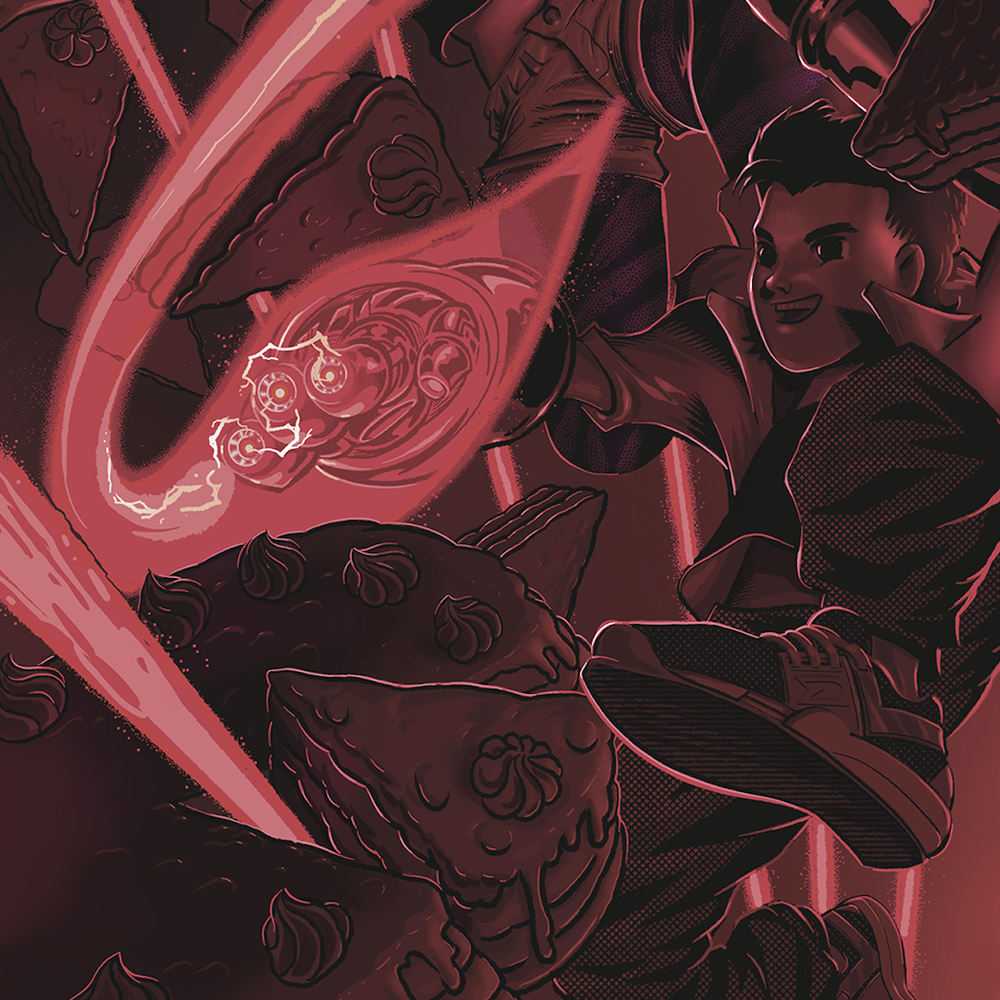

Chart Runners
Introduction
How can you create good plots? Good ones, meaning ones that are viewed with pleasure, that are informative, that are understood by a wide audience but that still can be appreciated by connoisseurs.
It requires some training and knowledge of some principles but it is a skill that can be learned. And it’s not just idle chatter, I have proof. Since 2013 I’ve been teaching a Data Visualization Techniques course at the University of Warsaw and Warsaw University of Technology. During this time I’ve had the pleasure of working with hundreds of STEM students, most of whom were able to create amazing, clear and often exceptional visualizations, right after learning about the rules of communication via plots.
Based on the experience from these classes, Chart Runners were created. This is a collection of brief lectures on different aspects useful for better understanding, how communication with the use of statistical charts works. On the following pages, many analogies to preparing dishes will be presented because both in the kitchen, as well as when preparing statistical charts, you need practice, the knowledge of some basic principles, a bunch of trusted recipes and lots of enthusiasm for experimentation. With this arsenal, any student of culinary arts is destined for success.
In the Factory of Taste chapter, the role of coherence and standardization when creating statistical charts. We will reference standards used in other domains, where very complex projects are communicated between the creator and a diverse audience. As examples, we will use musical notation, UML diagrams, and technical drawings. Statistical charts are not billboards, they don’t have to scream and stand out from other plots. Quite the contrary. Good charts complete each other, are easy to read and the “eureka!” moment comes from the presented data not the form of the chart. In the second part, we will show the standards proposed by the Polish Central Statistical Office (pl. GUS), “The Economist” magazine and the IBCS organization, which develops international business communication standards.

In the Tried and Tested chapter, we will discuss the most popular kinds of charts – solutions worth knowing and worth using to present the most common stories hidden in the data. How to show the distribution of qualitative or quantitative variables? How to compare two or more groups of observations? How to present the relationship between two or more variables? Learn about 14 charts, that will satiate any data hunger.

Are you tired of traditional dishes? Would you like to experiment a bit? Fantastic! Still, before you set sail into the unknown, read about three reefs, that you need to know how to avoid. In the Holes… chapter, we will talk about the difficulties with the perception of colors on charts, difficulties with shape perception and difficulties with the composition of the chart. But we won’t simply complain. Many of these problems can be avoided if you comply with some simple advice. You will find these pieces of advice at the end of each section.
In the information space, we see hundreds, if not thousands of charts. Between the good ones and bad compositions, you see some exceptionally delicious specimens. When we see them, they stay with us for a long time. Some of them are beautiful, and some of them saved many human lives. In the Cherries chapter we showcase five charts, that form the cannon of data visualization. On our way, we will meet the authors of everlasting works of art. Frank Anscombe, Otto Neurath, John Snow, Charles Minard or Florance Nightingale – anybody who is interested in statistical charts must know these names.

The tale of the charts wouldn’t be complete if it didn’t contain a warning about toxic visualizations. Poisoned information can lead to unpleasantness, indigestion and dizziness. In the Beware: Mutant! we will talk about several vicious poisons, that can ruin a whole dish. Mistakes in choosing the axes for the plot, erroneous choice of colors, incorrect use of pie charts, badly laid out elements of the plot, and a wrong choice of markings for key elements of the plot are defects, which can ruin any food.

Do you know the theory? It’s time to cook some charts yourselves. In the Code It Yourself chapter, we will describe the ggplot2 package for the R language, which is one of the best tools for the creation of statistical charts. Step by step we will reproduce the charts from the Tried and Tested Recipes, and in the meantime, we will analyze the grammar of graphics – a language created for the visual communication of data. A very interesting dataset is included alongside this book, describing over 2000 food items. Based on this dataset, we will cook up some amazing visualizations together, learning some interesting facts about the foods on the way.
At the end of every chapter, there is a set of tasks, which allow you to study the discussed topics. Some of them are very easy and you will be able to complete them without much effort, but there are also some, which need a bit of work. Don’t be discouraged if some prove too difficult, you can always come back to them later.
This book could only be written with the help of many people. The most motivation for my work is constantly provided by Beta and Bit. In addition, the first chapters took a long time to mature being nourished by conversations with Łukasz Maciejewski, Kamila Łyczek and Łukasz Rajkowski – three wonderful mathematicians from the Faculty of Mathematics, Informatics and Mechanics at University of Warsaw. The illustrations for this book were created through months of conversations with two wonderful designers Anna Szałwa and Ikert Bengoetxea Arruti. They created the fantastic graphics that open the chapters. On the home stretch, I was helped a lot by the comments of Anna Kozak, Mikołaj Spytek and Hubert Ruczyński, who used to be my students, and today they teach the “Data Visualization Techniques” course at the Warsaw University of Technology themselves. With language proofreading I was helped by the reliable Katarzyna Wróbel, with composition and contact with the printing house – Agata Balak. The final touches were possible thanks to the very insightful comments and suggestions of Łukasz Rajkowski. The English translation was done entirely by Mateusz Krzyzinski and Mikołaj Spytek. This was a tremendous amount of titanic work in a situation where many word plays are very hard to translat into a foreign language. This book would certainly not have been written if not for their support. But if there are faults left in this book, it is solely my oversight.